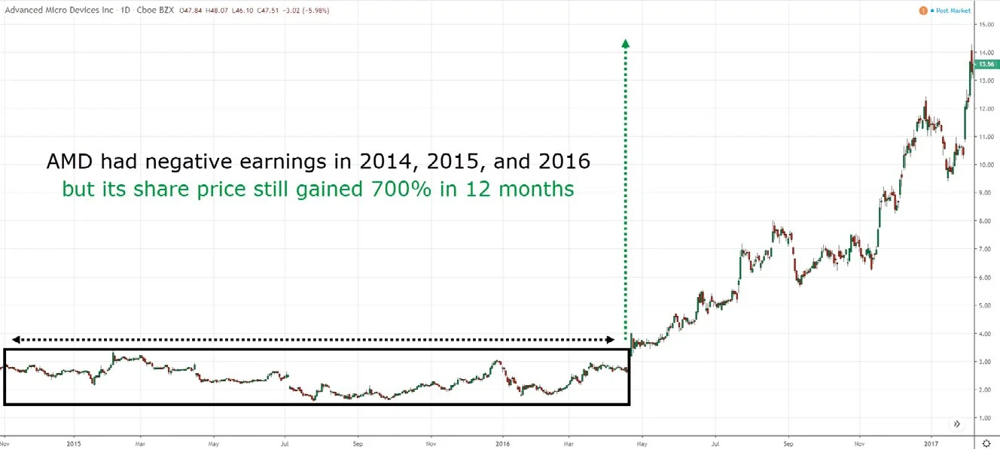

Here’s the deal: Most traders think the price goes up because there are more buyers than sellers. Nope. Here’s why.
Let’s say there are 100 buyers, each wanting to buy one share of Google. At the same time, there’s one seller, but the seller wants to sell one million shares of Google.
What do you think would happen to the price? Would it go up or down? It’ll go down because the selling pressure is greater than the buying pressure. This has nothing to do with there being more buyers than sellers because, in this case, there are more buyers than sellers. But the price is still going down because the selling pressure is greater.
And this is what price action trading is about: Understanding the imbalance between buying and selling pressure so you can better time your entries and exits—and improve your trading results.
So what are the benefits of price action trading?
Let me explain this further.
Now, you might be thinking, “But Rayner, fundamentals are what drive the market. How can I ignore them?”
Let me ask you, have you ever noticed how the market goes down when there’s bad news and up when there’s good news?
Here’s an example:
AMD stock had negative earnings in 2014, 2015, and 2016. But the stock price still gained 700% in 12 months.
If you were trading based on the news, you probably got burned and missed the monster rally.
But what if you ignored the news and just followed price? How would that turn out?
Since we’re on this topic, let me tell you a secret.
Have you ever wondered how financial news always have a reason for the market ups and downs?
It’s because they have a slew of positive and negative news on standby. If the market is up, they choose to share the positive news. And if it’s down, they focus on the negative news.
That’s why there’s always positive and negative fundamental news floating around. And the type of news that’s shared is dictated by the price movement, not the other way around.
Have you ever heard a news reporter say, “I have no idea why the market went down today.”
Nope, it never happens. They always know the cause because they have a list of “reasons” to choose from.
Most trading indicators work by applying a formula to the price. For example, a 200-day moving average calculates the average closing price over the last 200 days.
Now, there’s nothing wrong with using indicators in your trading, provided you understand how they work.
But if you don’t, you’ll be manipulated by trading indicators.
Let me give you an example. The relative strength index (RSI) indicator shows oversold on the daily timeframe. But if you “adjust” the settings, you can change the RSI to overbought.
That’s because the RSI calculates the average gains to losses over a fixed number of periods. And if you adjust the number of periods, you’ll get a different RSI reading.
So which settings do you trust? The overbought or the oversold RSI? And there lies the problem. If you’re not careful, you can manipulate indicators to fit your bias (and that’s a recipe for disaster).
Now, what about price action? Well, the price is the price – and what you see is what you get. No formulas, no “adjustment,” and less manipulation. (I say less manipulation because in less liquid markets, the price can still be manipulated by those with deeper pockets).
As you know, trading indicators work by applying mathematical formulas to the price. So they’re slower to react, and that’s how you get the saying “indicators lag behind the market.”
This means when you use price action to time your entries and exits, you’ll be faster than someone who relies on indicators.
But remember, just because indicators lag, doesn’t mean they’re useless because they’re a great tool to filter your trading setups, trade management, etc.
Imagine you wanted to build a house. Would you randomly install the doors, toilet bowls, bathrooms, and bedrooms whenever you felt like it?
Of course not. You’d have a framework (or blueprint) so you’d know the layout and design of your house. Only then, would you execute the work on your house.
It’s the same for trading. You don’t just blindly place buy and sell orders whenever you feel like it. You must have a framework for trading the markets that includes a plan for when to buy, when to sell, and when to stay out of the markets.
That’s how price action trading comes into play because it helps you to identify the different market conditions so you can use the appropriate trading strategy to respond to them. And when the market changes, so should your trading strategy.
At this point, you’re all excited about mastering price action trading. But wait. Before you begin, I want to share the downsides of price action trading with you so that you’re aware of them:
Let me discuss these points in more detail.
When you backtest discretionary trading strategies, you’re looking at historical data and “pretending” that you’re trading live.
You scroll through the charts until you’re looking at the earliest possible date, and you unfold each bar one by one, simulating what would happen as if it’s occurring in real-time.
Then, you decide whether you’ll enter or exit your trades according to your strategy—and record the performance over the backtest period.
Now, the problem with this approach is that your bias will skew your results.
For example, if you see that bitcoin is in an uptrend from 2015 to 2017, your bias will be on the long side (and you’ll avoid shorting).
In addition, you’ll be more likely to make errors in recording the result of each trade, which will make the results less reliable.
The alternative to backtesting is forward testing. Instead of looking at past data, you trade live and see how your trading strategy performs in real-time.
If you’re a short-term trader, you’ll be able to get a decent sample size of trades within a few months. However, for long-term traders, this may take a year or two. If you’re going down this path, it makes sense to have a full-time job and do this part-time so you reduce your opportunity cost.
Price action trading falls under discretionary trading. And when you trade in this manner, there’s subjectivity involved.
For example, if you ask two traders to identify patterns on a chart, you’ll get two different answers. Why? It’s because they each have their own interpretation of the market based on their own experiences and biases.
That’s why as a price action trader, it’s important to have a framework you can use to minimize subjectivity (and that’s what this book is all about).
Now, you can’t avoid subjectivity entirely. But it is something you’ll want to minimize as much as you can in order to be consistent in your trading.
You’ve learned what price action trading is about, why it matters, and what its pros and cons are.
In the next chapter, we’ll dive into the first component of price action trading: market structure. You’ll discover how the market really moves, so you’ll be able to gauge whether to buy, sell, or stay out of the markets. Let’s go!